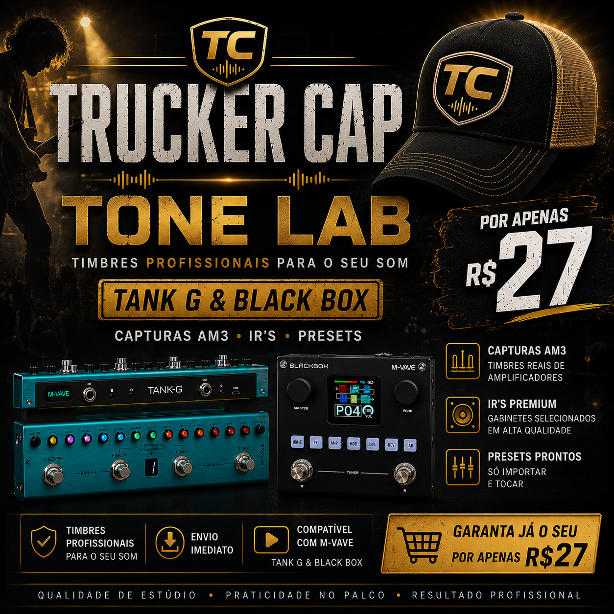

🎛️
Presets prontos
Patches organizados para uso rápido no Tank G e Black Box.
Tank G & Black Box
Timbres profissionais para músicos que querem praticidade, qualidade e resultado sem perder horas regulando equipamento.

Você compra a pedaleira, vê dezenas de vídeos, baixa arquivos soltos e ainda assim fica inseguro para tocar. O Tone Lab foi feito para simplificar: importar, testar e tocar.
Patches organizados para uso rápido no Tank G e Black Box.
Timbres reais de amplificadores e drives para dar vida ao seu som.
Gabinetes selecionados para deixar o som mais pronto e profissional.
Orientação simples para importar e começar a usar sem complicação.
Para quem é
Para quem toca em casa, na igreja, em bandas, em bares ou no palco e precisa de som pronto sem virar refém de regulagem.
Oferta especial
Capturas AM3 • IRs Premium • Presets para Tank G & Black Box
Troque o link do botão pelo checkout correto do Tone Lab antes de publicar.
Sim, a oferta foi pensada principalmente para usuários de Tank G.
Sim, também há arquivos e orientação para Black Box, respeitando os formatos compatíveis.
Sim. O valor anunciado é pagamento único.
A entrega deve ser configurada na sua plataforma de checkout para acesso imediato.